TP - Mise en oeuvre des patrons de conception avec des classes géométriques
- Introduction
- Démarrage
- Mise en garde
- 0.1 - Coordinate (2D)
- 0.2 - Geometry, Point et LineString
- 0.3 - Geometry.isEmpty()
- 0.4 - Geometry.translate(dx,dy)
- 0.5 - Geometry.clone()
- 0.6 - Envelope et EnvelopeBuilder
- 0.7 - Geometry.getEnvelope() : Envelope
- 0.8 - WktWriter
- 0.9 - GeometryVisitor
- 0.10 - WktVisitor
- 0.11 - Geometry.asText()
- 0.12 - EnvelopeBuilder en tant que GeometryVisitor
- 0.13 - GeometryWithCachedEnvelope
- 0.14 - GeometryListener
- 0.15 - GeometryCollection
- 0.16 - GeometryVisitor renvoyant un résultat
- Aller plus loin...
Introduction
L'objectif de ce TP est de s'exercer à mettre en oeuvre des patrons de conception via la création d'une petite bibliothèque de manipulation des géométries OGC :
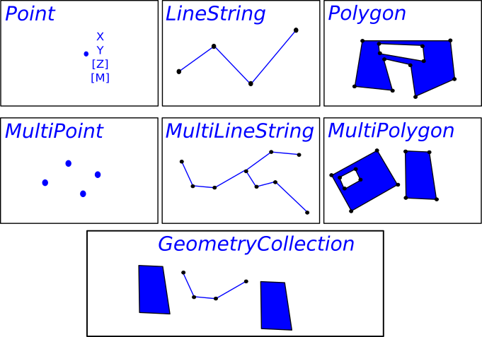
Vous noterez toutefois que ceci n'est qu'un exercice :
- Nous allons réinventer la roue carrée (utilisez plutôt JTS et GeoTools dans la vraie vie).
- Nous allons sombrer dans la paternite (les patrons de conception ne seront pas la solution à tous les problèmes et nous n'en n'utiliserons pas autant)
Démarrage
- Forker le projet https://github.com/mborne/tp-pattern-geometry
- Cloner le fork
- Lire le fichier README
- Importer le projet maven dans eclipse ou votre IDE préféré
Mise en garde
Vous devrez impérativement :
- Livrer un code fonctionnel et testé sur la branche par défaut de votre fork
- Avoir au moins un commit (voire une branche) par question avec un commentaire permettant de l'identifier
Pour ce faire, il vous est vivement conseillé de :
- Lancer à chaque étape la construction et les tests automatiques (
mvn clean package) - Travailler avec une branche "dev" si vous voulez pousser des résultats non finalisés.
0.1 - Coordinate (2D)
Objectif : Préparation du TP, principe de base, encapsulation
Créer une classe Coordinate permettant de représenter une position en 2D à l'aide d'un couple x,y :

Nous soulignerons que :
- Cette classe est immuable (une fois construite, une coordonnée ne peut être modifiée)
- Le constructeur par défaut initialisera une coordonnée vide matérialisée par
x=Double.NaNety=Double.NaN isEmpty()permettra de tester si une coordonnée est vide.toString()renverra un tableau au format JSON ([3.0,4.0],[NaN,NaN])
Exemple d'utilisation :
public class CoordinateTest {
public static final double EPSILON = 1.0e-15;
@Test
public void testCoordinateXY() {
Coordinate c = new Coordinate(3.0, 4.0);
assertEquals(3.0, c.getX(), EPSILON);
assertEquals(4.0, c.getY(), EPSILON);
assertFalse(c.isEmpty());
assertEquals("[3.0,4.0]", c.toString());
}
}
0.2 - Geometry, Point et LineString
Objectif : Préparation du TP, utilisation d'interface, encapsulation
Implémenter les trois classes suivantes illustrées sur le schémas ci-après :

Remarques :
getType()renverra le nom de la classe en CamelCase ("Point"ou"LineString")- Nous nous interdirons de modifier ce comportement dans les questions suivantes (
"POINT""LINESTRING"
0.3 - Geometry.isEmpty()
Objectif : Bonne pratique NonNullObject
Dans la question précédente, nous remarquons que nous avons des choix à faire dans les constructeurs par défaut de Point et LineString.
Afin d'éviter d'avoir à tester des coordinate ou points null, nous allons ajouter le concept de géométrie vide :
- S'assurer que la variable membre
coordinatedePointn'est jamais nulle. - S'assurer que la variable membre
pointsdeLineStringn'est jamais nulle (une liste vide est préférable à une valeur nulle). - Déclarer
Geometry.isEmptyet l'implémenter dansPointetLineString

Remarque :
- Nous tâcherons de blinder les appels
new Point(null)etnew LineString(null) - Nous ne traiterons pas le cas d'un appel
new LineString(points)avec un point null.
0.4 - Geometry.translate(dx,dy)
Objectif : Exploiter une interface pour réaliser un traitement spécifique
Ajouter une méthode de permettant de translater une géométrie.
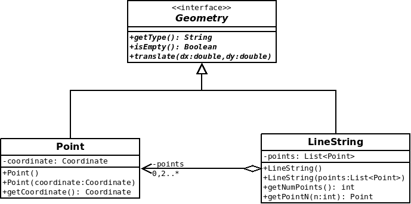
Remarque : Vous serez amené à créer une nouvelle Coordinate pour l'implémentation dans Point.
0.5 - Geometry.clone()
Objectif : Patron de conception Prototype
En introduisant la fonction précédente, nous avons renoncé à l'idée d'avoir des géométries immuable (non modifiable après construction).
Nous allons donc ajouter une méthode clone() permettant de récupérer une copie d'une géométrie :
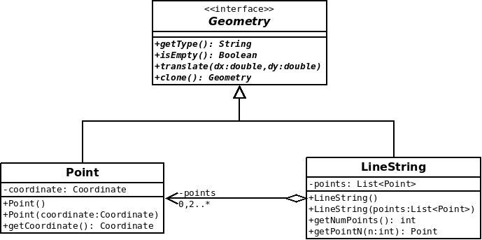
Exemple d'utilisation :
Geometry copy = g.clone();
copy.translate(10.0,10.0);
//... "g" n'est pas modifiée
Remarques :
- Sans
clone(), un traitement particulier serait nécessaire pour copier unPoint, uneLineString, etc. - Nous procéderons à une copie en profondeur pour les seules propriétés immuables.
0.6 - Envelope et EnvelopeBuilder
Objectif : Patron de conception Builder
Nous souhaitons calculer l'emprise d'une géométrie (la bbox). La logique de calcul de min/max en oeuvre étant assez complexe, nous ne souhaitons pas l'implémenter dans les classes Point et LineString.
Nous allons donc procéder comme suit :
- Ajouter une classe
Envelopereprésentant une emprise rectangulaire de la géométrie - Ajouter une classe utilitaire
EnvelopeBuilderqui aura pour rôle de construire cette emprise

Exemple d'utilisation :
EnvelopeBuilder builder = new EnvelopeBuilder();
builder.insert(new Coordinate(0.0,1.0));
builder.insert(new Coordinate(2.0,0.0));
builder.insert(new Coordinate(1.0,3.0));
Envelope result = builder.build();
Remarques :
- Vous avez la liberté d'ajouter des variables membres privées dans
EnvelopeBuilderpour le calcul. - En cas de difficulté pour faire des calculs de min/max optimaux, vous pouvez par exemple vous appuyer sur deux variables privées
xVals: List<Double>etyVals: List<Double>pour exploiter les fonctionnalités standards java :
List<Double> xVals = new ArrayList<Double>();
xVals.add(1.0);
xVals.add(-1.0);
xVals.add(3.0);
double xmin = Collections.min(xVals);
double xmax = Collections.max(xVals);
Assert.assertEquals(-1.0,xmin,EPSILON);
Assert.assertEquals(3.0,xmax,EPSILON);
Cette approche ne sera pas "optimale", mais elle peut être un premier jet permettant la mise en oeuvre des tests avant optimisation.
0.7 - Geometry.getEnvelope() : Envelope
Objectif : Facade sur EnvelopeBuilder
Ajouter une méthode utilitaire sur Geometry pour récupérer facilement l'enveloppe comme suit :
- Déclarer une méthode
getEnvelopedansGeometry - Implémenter cette méthode dans
PointetLineStringà l'aide deEnvelopeBuilder
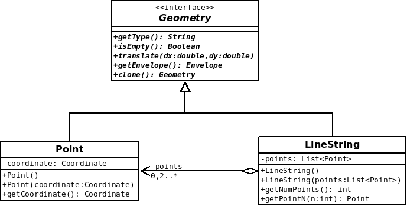
0.8 - WktWriter
Objectif : Mesurer l'intérêt d'une conception propre et de GeometryVisitor dans les questions suivantes
Ajouter une classe WktWriter avec une méthode permettant de convertir une géométrie au format WKT qui prendra par exemple les formes suivantes :
POINT EMPTY
POINT(3.0 4.0)
LINESTRING EMPTY
LINESTRING(0.0 0.0,1.0 1.0,5.0 5.0)
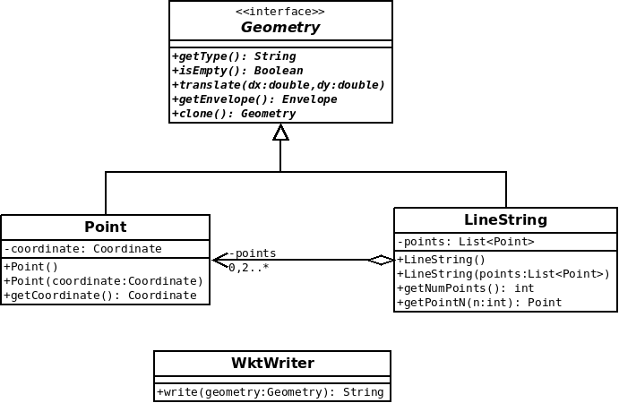
Exemple d'utilisation :
Geometry g = new Point(new Coordinate(3.0,4.0));
WktWriter writer = new WktWriter();
assertEquals("POINT(3.0 4.0)", writer.write(g));
Remarques :
- On s'interdira de modifier les classes
Geometry,PointetLineStringpour mettre en oeuvre cette fonctionnalité. - On s'autorisera l'utilisation d'un fragment de code ressemblant à ceci pour traiter les différents types concrets :
if ( geometry instanceof Point ){
Point point = (Point)geometry;
// traiter le cas Point
}else if ( geometry instanceof LineString ){
LineString lineString = (LineString)geometry;
// traiter le cas LineString
}else{
throw new RuntimeException("geometry type not supported");
}
0.9 - GeometryVisitor
Objectif : Patron de conception Visitor, prise en main
- Ajouter l'interface
GeometryVisitor - Implémenter un visiteur
LogGeometryVisitorqui affiche la géométrie dans la console sous les formes suivantes :- "Je suis un point vide."
- "Je suis un point avec x=2.0 et y=3.0."
- "Je suis une polyligne vide."
- "Je suis une polyligne définie par 3 point(s)."
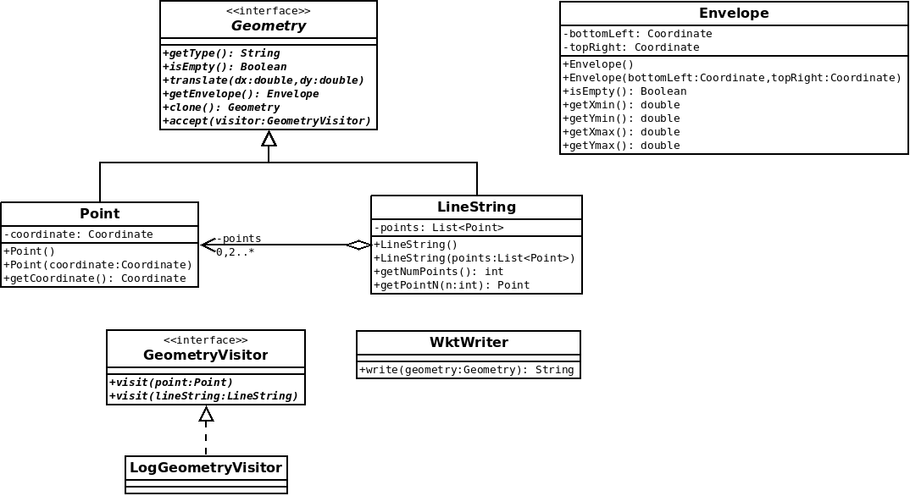
Exemple d'utilisation :
LogGeometryVisitor visitor = new LogGeometryVisitor();
Geometry geometry = new Point(new Coordinate(3.0,4.0));
geometry.accept(visitor);
Pour tester les écritures dans la console de LogGeometryVisitor, nous remarquerons que System.out est de type PrintStream et qu'il est possible d'écrire dans une chaîne de caractère plutôt que dans la console en procédant comme suit :
ByteArrayOutputStream os = new ByteArrayOutputStream();
PrintStream out = new PrintStream(os);
LogGeometryVisitor visitor = new LogGeometryVisitor(out);
geometry.accept(visitor);
// result contiendra ce qui est écrit dans la console
String result = os.toString("UTF8");
0.10 - WktVisitor
Objectif : Patron de conception Visitor, mise en oeuvre dans un cas concret
Reprendre l'implémentation de WktWriter sous la forme d'un GeometryVisitor en implémentant une classe WktVisitor.
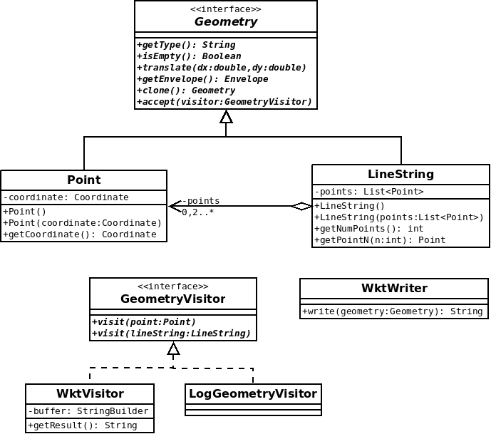
Exemple d'utilisation :
WktVisitor visitor = new WktVisitor();
Geometry geometry = new Point(new Coordinate(3.0,4.0));
geometry.accept(visitor);
assertEquals( "POINT(3.0 4.0)", visitor.getResult() );
Remarque : Au niveau de visit, on écrira dans la variable membre buffer à l'aide de append de StringBuilder. Au niveau de getResult(), on récupérera la chaîne du buffer à l'aide de toString de StringBuilder.
0.11 - Geometry.asText()
Objectif : Patron de conception Facade, héritage à trois niveau avec interface et abstract.
A l'aide de AbstractGeometry et WktVisitor :
- Ajouter une méthode
Geometry.asText(): Stringrenvoyant la géométrie au format WKT - Ajouter une classe astraite
AbstractGeometryimplémentant la méthodeasText
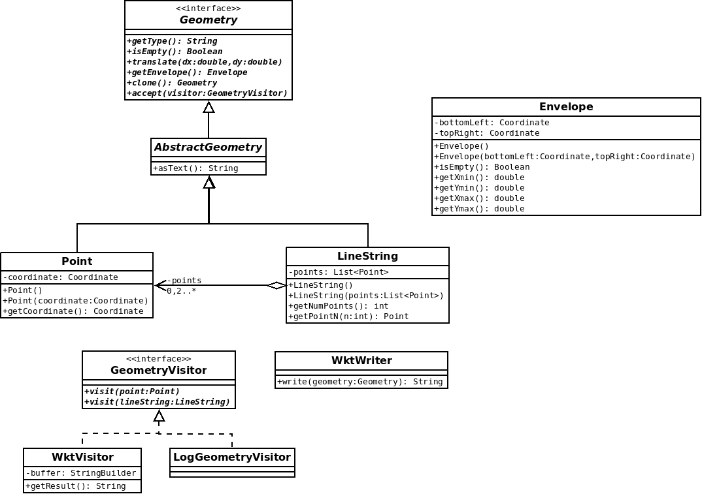
Remarque : Il faudra redéclarer la méthode clone() au niveau de AbstractGeometry.
0.12 - EnvelopeBuilder en tant que GeometryVisitor
Objectif : Visitor, refactoring (extraction de l'implémentation d'une fonctionnalité)
- Transformer
EnvelopeBuilderenGeometryVisitor - Remonter l'implémentation de
getEnvelopedansAbstractGeometry
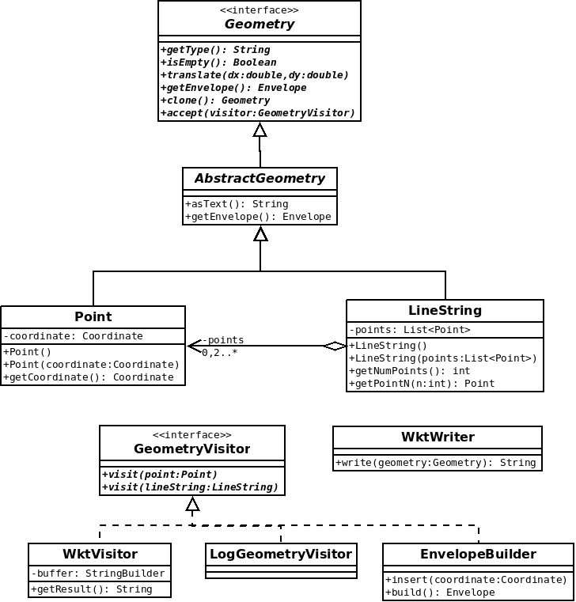
0.13 - GeometryWithCachedEnvelope
Objectif : Patron de conception Decorator
- Implémenter une classe
GeometryWithCachedEnvelopequi permet de mettre en cache le calcul de l'enveloppe
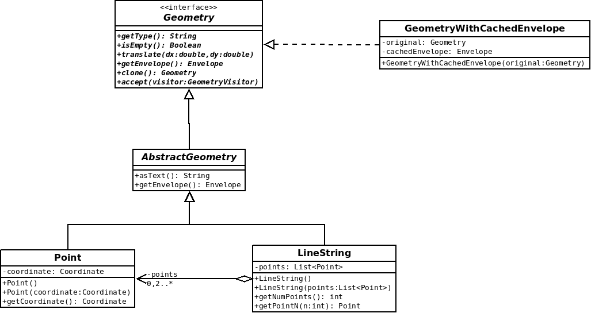
Exemple d'utilisation :
Geometry g = new Point(new Coordinate(3.0,3.0));
// décoration
g = new GeometryWithCachedEnvelope(g);
Envelope a = g.getEnvelope() ; // calcul et stockage dans cachedEnvelope
Envelope b = g.getEnvelope() ; // renvoi de cachedEnvelope
assertSame(a,b);
Remarque : on traitera l'invalidation du cache en cas de modification de la géométrie originale à la prochaine question.
0.14 - GeometryListener
Objectif : Patron de conception Observable
Pour être en mesure d'invalider l'enveloppe précalculée en cas de modification d'une géométrie, nous allons mettre en place un mécanisme d'événement :
- Ajouter une interface
GeometryListenerqui permettra aux utilisateurs d'être notifié en cas de modification d'une géométrie - Notifier une modification aux
listenersdanstranslate(dx,dy)à l'aide detriggerChange - Exploiter ce mécanisme pour recalculer l'enveloppe en cas de modification dans
GeometryWithCachedEnvelopequi s'ajoutera comme unlistener
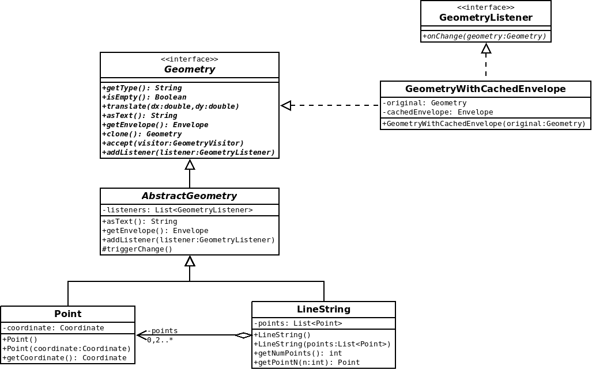
Remarque : translate étant la seule fonction capable de modifier une géométrie, il serait actuellement possible de se contenter d'invalider l'enveloppe en surchargeant translate dans GeometryWithCachedEnvelope pour nettoyer au passage le cache. Rien ne garanti toutefois que translate reste la seule fonction à même de modifier une géométrie et que toutes ces fonctions restent déclarées au niveau Geometry.
0.15 - GeometryCollection
Objectif : Patron de conception Composite, Refactoring
Ajouter une classe GeometryCollection représentant une géométrie multiple, adapter les autres fonctionnalitées.

Remarque :
- Le format WKT prendra la forme suivante pour les
GeometryCollection:
GEOMETRYCOLLECTION EMPTY
GEOMETRYCOLLECTION(POINT(3.0 4.0),LINESTRING(0.0 0.0,1.0 1.0,5.0 5.0))
0.16 - GeometryVisitor renvoyant un résultat
Objectif : Exploiter les classes génériques, visiteur renvoyant directement un résultat.
Pour avoir la capacité de renvoyer des résultats avec des types variables :
- Transformer la classe
GeometryVisitorenGeometryVisitor<T>. - Adapter les visiteurs existants ne renvoyant pas de résultat en implémentant
GeometryVisitor<Void>. - Ajouter une classe
LengthVisitor<Double>renvoyant la longueur de la géométrie en guise de démonstration (0.0 pour un point)
LengthVisitor<Double> visitor = new LengthVisitor<Double>();
Double result = geometry.accept(visitor);
Aller plus loin...
Pour blinder votre TP :
- Contrôler le taux de couverture par les tests et la pertinence des tests.
- Vérifier que vous respectez DRY pour la conversion
Coordinateen chaîne de caractères dans la production des WKT.
Se demander par exemple quel serait l'impact de l'ajout d'un paramètre optionnel pour contrôler le nombre de décimales (Indice : Vous avez le droit de définir une méthode privée
writeCoordinate).
- Vérifier que vous respectez DRY pour le calcul des min/max dans
EnvelopeBuilderet optimiser la consommation de RAM
Indice : En matérialisant le concept mathématique que vous manipulez dans une classe Interval, vous encapsulerez efficacement le calcul d'un
loweret d'unupperavec une méthodeexpandToInclude).
Pour prendre du recul :
- Remarquer qu'en supprimant
translatesurGeometry, il serait possible de rendre immuable lesGeometry. Se demander quels seraient les avantages et inconvénients? Quels seraient les patrons de conception inutiles? - Se demander s'il serait possible d'ajouter un type de premier niveau tel
Circledans une bibliothèque tierce utilisant celle-ci? Quel est le patron de conception utilisé qui serait limitant? - Remarquer qu'il est difficile de s'y retrouver dans les différentes classes et qu'il serait intéressant d'organiser les classes en package
io, etc. (ne pas traiter)